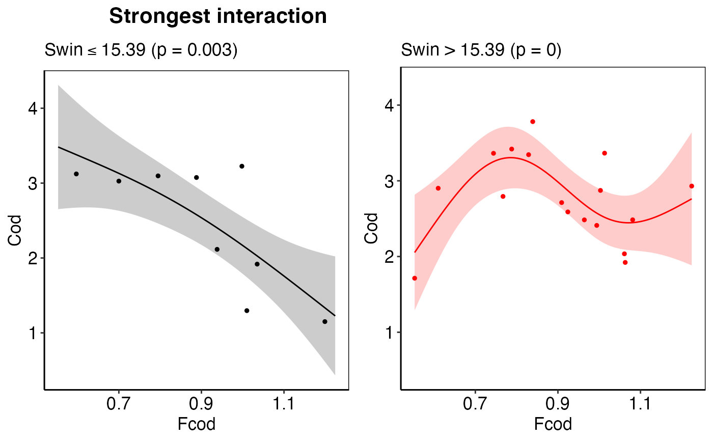
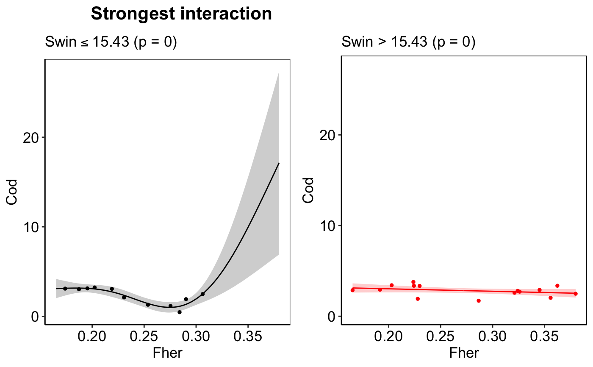
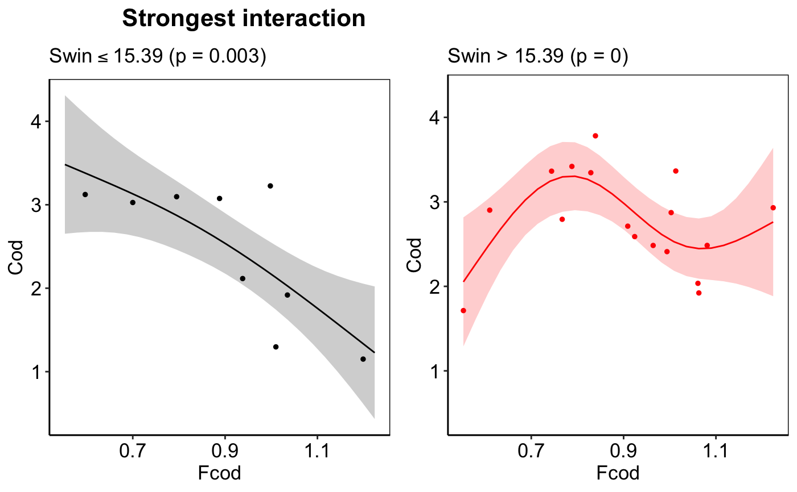

These are the actual plotting functions for each of the 4 plots shown
in the wrapper function plot_model. plot_thresh
works currently only for threshold-GAMs but not for threshold_GAMMs.
plot_thresh(thresh_sublist, choose_thresh_gam) plot_response( x, y, x_seq, pred, ci_up, ci_low, xlab, ylab, pos_text, label, title = "Response curve S" ) plot_predict( x, y_obs, y_pred, ci_up, ci_low, x_train, x_test, zoom, x_range, y_range, xlab, ylab, pos_text, label, title = "Predictive performance" ) plot_deriv( press_seq, deriv1, deriv1_ci_low, deriv1_ci_up, zic_start_end, zero_in_conf, xlab, ylab, pos_text, label ) plot_all_mod(p1, p2, p3, p4, title)
# Example for dealing with nested list-columns using the # Baltic Sea demo data thresh_sublist1 <- all_results_ex$thresh_models[[69]] thresh_sublist2 <- all_results_ex$thresh_models[[70]] thresh_sublist <- list(thresh_sublist1, thresh_sublist2) %>% purrr::flatten(.) plot_thresh(thresh_sublist, choose_thresh_gam = NULL)plot_thresh(thresh_sublist, choose_thresh_gam = 1)plot_thresh(thresh_sublist, choose_thresh_gam = 2)